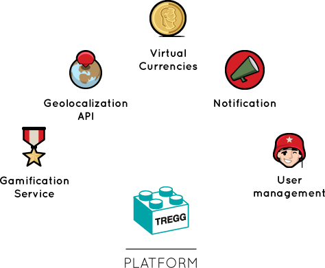

FunGo is a mobile game studios based in H-Farm, one of the most prominent Italian venture incubator placed in the Venice Area. The company was founded in 2011 and focuses on the development and distribution of location-based social games, mainly on mobile platforms. A tight-knit and high-skilled team, a proprietary technology and strong motivation make FunGo Studios one of the most innovative European gaming company with two titles available on mobile stores and a new third on the launching pad.
Take a surreal journey around the galaxy, searching for the most bizarre planets from outer space: travel in the hyperspace dimension tunnel and hunt planets with powerful space rockets! Planet Hunt requires concentration, tactic and timing to catch all this astonishing stars in the universe: so far no Planet Hunters have succeeded in this venture... will you be the first? Planet Hunter is your next challenge: easy to play but hard to beat! DOWNLOAD NOW
GOWAR - Make peace, Play GoWar!
GoWar is the social mobile game that brings adventurous battles and mighty tanks in your quite city. GoWar reveals the great strategist inside you: conquer real places, manage your troops and declare war on your favorite spots to build your empire. With GoWar you will be able to play with and against real people while roaming around your city and interacting with other players. The first FunGo title available for iPhone and Android mobile phone will definitely shake your life. Jump with us in war trench and join thousand of soldiers in our community!
- Find out more on
- www.gowar.com
- Pagina facebook
- Link twitter

FUN IS NOW MOBILE WITH TREGG
- All our works shows off our passions for games, fun and technology.
Our mission to push on interaction among players and real venues has its fundamentals in something new we created: TREGG “Technology and Real-Time Engine for Geolocalized Games”. This is an innovative manages all the different features in our games (awards, leaderboards, events) in a simple way and moving all the effort to an unique platform. TREGG integrates different modules such as: gaming API, user-to-social-networks linking and geolocalization services. TREGG makes easy to spread fun from people smartphones to the rest of the world.
FunGo Studios main headquarter is settled in a beautiful
valley bounded by the Sile river, located between
Treviso and Venice province. It is a magic place very
easy to reach either by car, train or from the Venice
International Airport.
FunGo Studios- ITALY
Tenuta Ca' Tron
Via Sile, 41 - 31056 Roncade
Treviso - Italy
Tel. +39.0422.789611 - Fax +39.0422.789666 - Mail: team@fungostudios.com